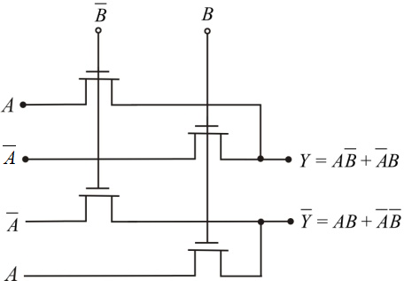
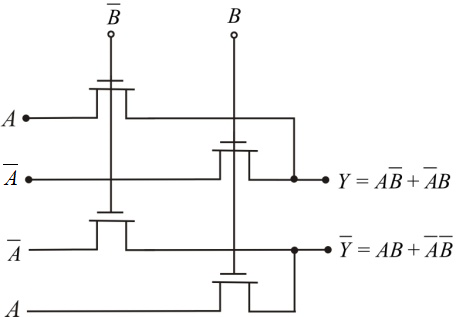

Draw the CPL (complementary pass transistor logic) for the expression  and
and  .
.

Figure 1
Thus, the CPL’s for the expressions  and is shown in Figure 1.
and is shown in Figure 1.
Draw the CPL (complementary pass transistor logic) for the expression and .

Figure 1
Thus, the CPL’s for the expressions and is shown in Figure 1.